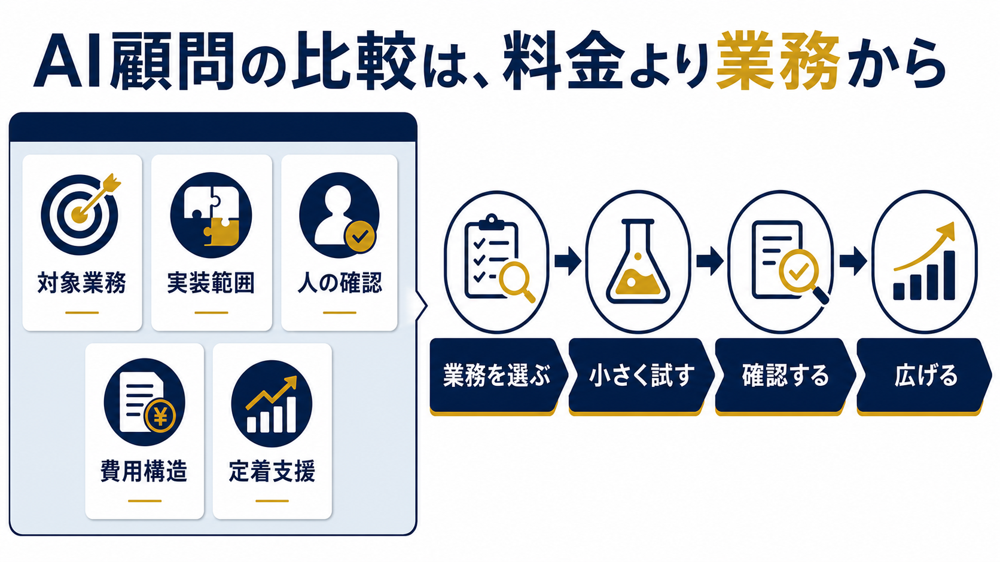

AI顧問を比較する5つの基準｜中小企業向け選び方と費用の見方
中小企業の経営者がAI顧問を比較するとき、月額だけを並べても自社に合う相手は選べません。対象業務、実装範囲、人の確認、費用構造、定着支援を同じ条件で確認し、「相談で終わるのか、現場で動くところまで進むのか」を見極める必要があります。
公開日: 2026年7月30日 | AI顧問室 編集部

AI顧問は何を基準に比較すればよいですか？
比較の出発点は、サービス名ではなく「自社のどの業務を変えるか」です。中小企業基盤整備機構の2026年調査では、AIを導入している企業は20.4%、導入予定・検討中は18.6%でした。 導入の有無だけではなく、業務に接続できるかが次の差になります。
最初に、見積書作成、問い合わせ分類、会議後のタスク整理など、入力と完了条件を説明できる業務を一つ選びます。次に「助言だけ」「設定まで」「試作まで」「本番運用まで」のどこを依頼するかを決めます。ここが曖昧なまま料金を比べると、安い相談契約の後に実装費が増えたり、高機能な仕組みを導入しても現場で使われなかったりします。
自社の候補業務が決まっていない場合は、先にAI導入の進め方で業務の棚卸しを行いましょう。比較表へ会社名を並べるのは、その後です。
比較すべき5つの基準
AI顧問の比較では、全候補へ同じ質問を投げ、回答を横並びにします。営業資料の言い回しではなく、契約書、提案書、担当体制、成果物、運用方法で確認してください。
| 比較基準 | 確認する内容 | 良い回答の例 | 注意する回答 |
|---|---|---|---|
| 対象業務 | 最初に扱う一業務、開始・完了条件 | 対象と対象外を言える | 「何でもAI化できます」 |
| 実装範囲 | 助言、設定、試作、本番、保守 | 成果物と責任分界が明確 | 実装費が後からしか分からない |
| 人の確認 | 送信、公開、支払い、削除の承認 | 止める地点とログがある | 完全自動だけを強調する |
| 費用構造 | 初期、月額、従量、追加改修、解約 | 総額を条件付きで試算できる | 月額だけが安く見える |
| 定着支援 | 研修、手順書、権限、改善、引き継ぎ | 社内に運用方法が残る | 担当者しか直せない |
とくに「人の確認」は、機能比較から抜けやすい項目です。顧客への外部送信、契約・請求の確定、個人評価、権限変更、削除などは、AIが提案しても責任者が承認する設計を残します。AI導入のリスクも合わせて確認してください。
支援タイプの違いをどう見分けますか？
支援タイプは、ツール、研修、相談、個別開発、継続伴走に分けると比較しやすくなります。優劣ではなく、自社の現在地との適合で選びます。
| タイプ | 向いている状態 | 主な成果物 | 見落としやすい費用 |
|---|---|---|---|
| AIツール | 担当者が自分で設定・運用できる | アカウント、テンプレート | 設定、教育、運用担当の時間 |
| AI研修 | 社員の基礎理解と活用習慣を作りたい | 教材、演習、社内ルール | 研修後の質問対応、個別実装 |
| スポット相談 | 方向性や優先順位を短期間で決めたい | 診断、ロードマップ | 実装と定着は別契約になりやすい |
| 個別開発 | 対象業務と要件が明確 | 試作、本番システム、手順書 | 保守、追加改修、データ整備 |
| AI顧問 | 複数業務を順に改善し、社内へ残したい | 優先順位、実装、研修、改善会議 | 契約期間、稼働範囲、追加作業 |
たとえば「全社員がChatGPTを使えるようにしたい」なら研修が先です。「この見積工程だけを自動化したい」なら個別開発が合います。「業務を選ぶところから、試作、研修、定着まで毎月進めたい」なら継続型のAI顧問が候補になります。
AI顧問室では、顧問契約とは別にAI研修と導入支援・自動化構築を用意しています。比較対象として自社サービスを挙げる場合も、合わない条件を明示します。単発で完了する業務に、継続契約が常に必要なわけではありません。
費用は月額ではなく総コストで比べる
費用比較では、契約期間中の支払額に加え、社内担当者の時間、データ整理、ツール利用料、追加改修、教育、保守を含めます。「月額が安い」ことと「目的達成までの総コストが低い」ことは同じではありません。
AI顧問室の顧問契約は、公開中の公式ページでは月50万円から、税別、最低契約期間3ヶ月です。 支援範囲によって費用が変わるため、訪問、実装、研修、ツール費、追加改修の含有範囲を提案時に確認する必要があります。この価格が適切かは、削減できる時間やミス、追加売上ではなく、まず対象業務と実施範囲に対して判断します。
費用対効果を考えるときは、期待値を一つの数字に固定しません。AI導入の費用対効果を使い、標準ケース、保守ケース、停止ケースを分けます。効果が出なかった場合に、どの状態へ戻すかも契約前に決めます。
初回面談で確認する10の質問
初回面談では、相手の説明を聞くだけでなく、同じ質問を全候補へ投げます。回答が曖昧なら、提案書に書いてもらいます。
- 最初に対象とする一業務は何ですか。
- 今回の契約に含まれない作業は何ですか。
- 初月、2ヶ月目、3ヶ月目に何が残りますか。
- 顧客への送信や削除の前に、誰が承認しますか。
- 入力データはどこへ保存され、誰が見られますか。
- エラー、修正、停止、承認のログは残りますか。
- ツール費、追加改修、保守は別料金ですか。
- 担当者が変わっても、社内で運用を続けられますか。
- 効果が出ないとき、何を止め、どこまで戻せますか。
- 類似事例は実績ですか、想定例ですか。
良い提案は、できることだけでなく、できないこと、前提条件、顧客側の担当、停止条件を説明します。「AIで全部できます」という回答より、「この範囲なら試せます」と境界を示す回答の方が、実装後の責任を合わせやすくなります。
提案書を同じ一枚にそろえて比較する
候補ごとに提案書の章立てが違うと、説明が上手な会社だけが有利になります。社内で一枚の比較シートを作り、候補名、対象業務、現状時間、完了条件、成果物、顧客側担当、承認点、保存データ、追加費用、停止条件、引き継ぎ方法を同じ順に転記してください。書かれていない項目は、推測で埋めず「未回答」とします。
比較会議では、総合点だけを付けない方が安全です。たとえば、実装力が高くても社内定着の説明が弱い候補と、研修が丁寧でも個別連携を扱わない候補では、点数の合計が同じでも用途が違います。「今回の必須条件を満たすか」「不足を別契約で補えるか」「不足を受け入れてもよいか」の順で判断します。
想定例として、問い合わせ返信の改善を選んだ会社なら、成果物を「返信案を作る仕組み」とだけ書かず、受信内容の分類、参照する回答資料、回答案、担当通知、人の承認、送信、ログ保存まで工程に分けます。AI顧問側がどこを担当し、自社側がどこを確認するかが見えれば、比較後の期待違いを減らせます。
最後に、採用理由を文章で残します。「有名だから」「安いから」ではなく、「対象業務の試作と承認ログまで契約内で、社内担当へ引き継ぐ手順があるため」のように書きます。この一文が書けなければ、比較条件か提案内容がまだ曖昧です。
比較シートには、未回答のまま契約できない必須項目も印を付けます。個人情報の保存先、外部送信前の承認者、障害時の連絡先、契約終了時のデータ返却と削除は、便利さより先に確認する項目です。回答が後日になる場合は、回答期限と責任者を記録し、口頭説明だけで完了扱いにしません。
AI顧問選びで起きやすい失敗
一つ目の失敗は、ツールのデモを成果とみなすことです。デモが動いても、実データ、権限、例外、担当者、承認、ログが決まらなければ業務には入りません。試作の評価指標は生成品質だけでなく、確認時間、修正件数、停止回数、ログ欠落まで含めます。
二つ目は、研修と実装を混同することです。研修は判断力と使い方を社内へ残しますが、個別業務の連携や自動化は別作業になる場合があります。逆に、実装だけを外注すると、障害時に社内で直せない状態が残ります。
三つ目は、成果数値の定義を確認しないことです。帝国データバンクの2026年調査では、生成AIを活用している企業のうち86.7%が効果ありと回答しました。 ただし、これは導入企業全体の売上増加率ではありません。対象、質問、効果の定義を読まずに、自社の成果保証へ置き換えないでください。
四つ目は、安さだけで長期契約を決めることです。小さな業務で試し、レビュー日を決め、続ける条件と止める条件を合意します。Human-in-the-Loopは最終確認の儀式ではなく、外部送信や重要判断を止める設計です。
AI顧問室が向く会社・向かない会社
AI顧問室が向くのは、従業員数が十数名から数十名程度で、経営者がAI活用の必要性を感じている一方、対象業務の選定、実装、社員教育、定着を一つずつ進めたい会社です。相談、優先順位整理、必要に応じた実装・研修を継続的に扱う設計です。
一方、導入したいツールと担当者が決まり、自社だけで設定・運用できる会社には、顧問契約が過剰な場合があります。対象業務が一つで要件が固まっている場合も、単発の導入支援が適する可能性があります。毎月の支援範囲が説明できない状態で契約を急ぐ必要はありません。
比較の目的は、AI顧問室を必ず選ぶことではありません。自社の業務、責任、費用、定着条件に合う支援形態を決めることです。候補業務と比較条件を短時間で整理したい場合は、AI顧問室の無料相談で最初の一手を確認できます。
よくある質問
AI顧問とAIコンサルタントは同じですか？
呼称だけでは区別できません。助言中心、開発中心、研修中心、継続伴走など、実際の契約範囲で判断してください。成果物、担当者、承認点、保守、定着支援を比較すると違いが見えます。
AI顧問は安いサービスを選んでも大丈夫ですか？
対象業務と完了条件が合えば問題ありません。ただし、月額に含まれない設定、ツール、実装、保守、研修、社内担当者の時間を確認し、総コストで比べます。
契約前にPoCは必要ですか？
外部送信、複数システム連携、個人情報、金額確定など影響の大きい業務では、小さな試行が有効です。最初は提案や下書きに限定し、ログと人の承認を確認してから範囲を広げます。
比較表には何社入れるべきですか？
社数を増やすより、支援タイプの違う候補を数社に絞り、同じ質問へ回答してもらう方が判断しやすくなります。ツール、研修、開発、継続伴走を混ぜる場合は、目的が同じか先に確認します。
出典
- 中小企業基盤整備機構「中小企業のAI等の利活用に係る実態調査」、2026年、2026-07-30取得: https://www.smrj.go.jp/research_case/questionnaire/fbrion0000002pjw-att/202603_AI_report.pdf
- 帝国データバンク「生成AIに関する企業の動向調査（2026年3月）」、2026-05-14、2026-07-30取得: https://www.tdb.co.jp/resource/files/assets/d4b8e8ee91d1489c9a2abd23a4bb5219/61afb5417b4e4abf83e66684660cb4a8/20260514_%E7%94%9F%E6%88%90AI%E3%81%AB%E9%96%A2%E3%81%99%E3%82%8B%E4%BC%81%E6%A5%AD%E3%81%AE%E5%8B%95%E5%90%91%E8%AA%BF%E6%9F%BB%EF%BC%882026%E5%B9%B43%E6%9C%88%EF%BC%89.pdf
- AI顧問室「料金の目安」、2026-07-30取得: https://ai-komon.bivrost.co.jp/#pricing